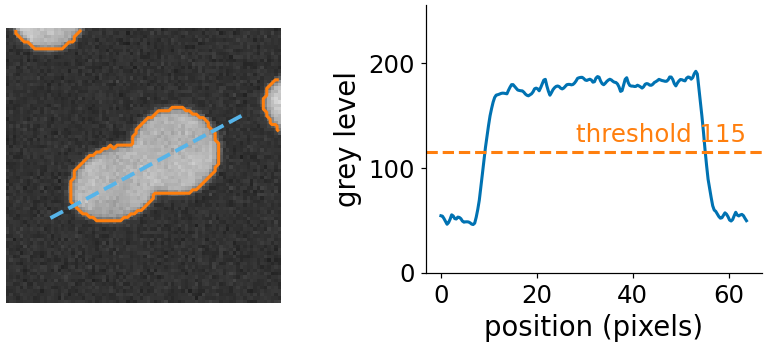
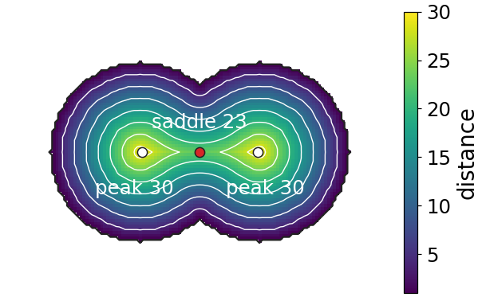
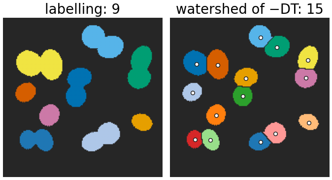
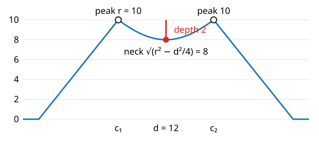
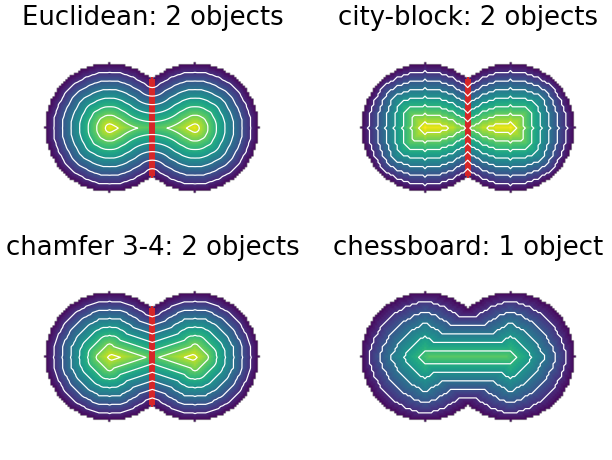
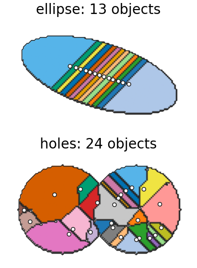

Splitting touching objects with the distance transform
Image analysis
About this lecture
Thresholding nuclei gives one blob for two touching nuclei, and the gradient cannot help: there is no edge between them. The shape of the blob can: two round objects make a blob with a neck.
The distance transform turns the mask into a landscape with one peak per object and a saddle at each neck.
Watershed of -\mathrm{DT} inside the mask: the cut goes through the neck.
When are two discs split? Peaks r, neck \sqrt{r^2 - d^2/4}: split if the neck is deeper than h.
Fluorescent nuclei, thresholded (the thresholding day), labelled (the labelling day): nuclei that touch become one component.
The intensity inside the pair is nearly constant: no edge, so no ridge in the gradient (previous unit). Flooding the gradient from h-minima keeps the pair as one region.
But the outline of the pair is not round: it has two bulges and a neck where they meet. The idea: measure, for every pixel of the mask, how far it is from the outside.

Two touching nuclei from the distws demo’s nuclei image, with the threshold outline (orange): the grey level along the dashed line (right) stays flat across the contact, so there is no edge between them; only the outline has a neck.
\mathrm{DT}(p) = \min_{q \notin A} \|p - q\| \qquad (0 \text{ on the background})
A mountain over each object: low at the outline, highest in the middle, with ridges along the centre lines.
Metrics: city-block, chessboard, chamfer 3-4, exact Euclidean; two raster passes for the chamfer ones.
A disc of radius r: a cone with its peak r at the centre.
Two touching discs: two cones, and between them a saddle at the neck, lower than both peaks.

Euclidean distance transform of the demo’s two discs (r = 30, d = 40) with iso-lines: one peak of height 30 per disc (white dots) and a saddle of height 23 at the neck (red dot).
Flood the inverted distance transform
Landscape: -\mathrm{DT}, restricted to the mask. The peaks become minima (one per object), the neck becomes a pass.
Markers: the regional maxima of \mathrm{DT}, or better its h-maxima (peaks that rise more than h above the saddle to a higher peak).
Flooding from the markers inside the mask: the dam sits on the saddle line, across the neck.
Result: one label per object, even where objects touch. Count, measure, compare (the measurements day).

The demo’s nuclei image (threshold 115): labelling the mask gives 9 objects; the watershed of −DT from its h-maxima (h = 2, white dots) gives 15, one per nucleus.
Try it: two discs
When are two discs split?

Two discs of radius 10 with centres 12 apart: the distance transform along the line through the centres.
Discs of radius r, centres d apart (d < 2r): peaks of height r; the neck at the midpoint has height \sqrt{r^2 - d^2/4}. With h-maxima markers they are split if and only if the neck depthr - \sqrt{r^2 - d^2/4} > h . Example: r = 10, d = 12: neck 8, depth 2. Split for h < 2, merged for h \ge 2.
The math: the neck
Place the centres at (\pm d/2, 0). The background is outside both discs.
The two circles cross at (0, \pm y_c) with y_c = \sqrt{r^2 - d^2/4} (Pythagoras on the triangle centre, midpoint, crossing).
At the midpoint (0, 0) the nearest background points are these two corners, so \mathrm{DT}(0, 0) = y_c. Moving towards a centre along the line, the distance to the corners grows while the distance to the far side of that disc’s circle, r - |x \mp d/2|, takes over: the profile rises to r at each centre.
Depth \delta(d) = r - \sqrt{r^2 - d^2/4}, increasing in d: from 0 (one disc, d = 0) to r (tangent discs, d = 2r).
Split condition \delta(d) > h \iff d > 2\sqrt{r^2 - (r - h)^2} = 2\sqrt{2rh - h^2}. For r = 10, h = 1: d > 8.72.
On a pixel grid the peak and the neck are known only to about one pixel: the demo’s measured depths differ from the formula by up to about 0.9.
Try it: move them together
The metric matters
On the same two discs (r = 30, d = 40):
metric
peaks
neck
depth
objects (h = 2)
Euclidean
30.0
23.0
7.0
2
city-block
31
23
8
2
chamfer 3-4
29.3
23.0
6.3
2
chessboard
23
23
0
1
Chessboard distance reaches the outline fastest along the diagonals, so a disc’s peak is only about r/\sqrt 2, no higher than the neck: the pair is not split until roughly d > \sqrt 2\, r (here 42; on the pixel grid from d = 44).
City-block reaches it fastest along the axes; it happens to work here because the neck lies along an axis. Chamfer and Euclidean are nearly direction-independent: the safe choice.

Distance transforms of the same two discs in four metrics, with iso-lines and the cut (red) at h = 2. Chessboard iso-lines are squares: the peaks are no higher than the neck, so there is no cut.
Failure modes
Elongated or bean-shaped cells: the DT has a long ridge with small bumps; each bump is a regional maximum. An ellipse with semi-axes 55 and 22 gives 13 objects at h = 0 (Euclidean): oversplitting. A small h (0.5) fixes it.
Strong overlap: the neck is barely lower than the peaks (small d): undersplitting. No h can separate them; their shape no longer says “two”.
Holes in the mask (a dark nucleolus, a threshold too high inside the nucleus): the DT drops to 0 at the hole, and peaks appear all around it. Fill holes first (the morphology day).
Rough outlines (noise at the threshold): small bumps in the DT, again more peaks: smooth the mask or raise h.

Watershed of −DT with h = 0 (all regional maxima as markers, white dots): an ellipse with semi-axes 55 and 22 falls apart along its ridge; two discs with holes in the mask give peaks all around the holes.
Try it: an ellipse, holes, three in a row
Combining landscapes
The DT knows the shape, the gradient knows the edges. Use each for what it is good at:
markers from the peaks of the DT (one per object, robust to intensity variations);
flooding on the gradient of the intensity image, inside the mask (the boundary between two touching nuclei follows any faint edge there is).
Other marker sources: h-maxima of the smoothed intensity (bright nuclei), blob detection with the Laplacian of Gaussian (the edges day).
The distance transform can be weighted by intensity, or replaced by any “how deep inside” map; deep learning methods learn such a map (next slide).
Try it: a nuclei image
Where this goes next
Deep learning (the modern deep learning day, day 39; networks for cells, day 40): networks for instance segmentation often predict a distance-like map, a boundary class, or a flow field towards each object’s centre, and then split the objects with a watershed-like step. The “how deep inside” idea of this unit, with a learned landscape.
Counting correct splits (the evaluation day): object-level evaluation matches predicted objects to true ones; oversplitting and undersplitting become false positives and false negatives.
Measurements (the next day): once every object has its own label, its area, shape and intensity can be measured.
Summary
Touching objects of the same intensity have no edge between them, but their union has a neck.
Distance transform: one peak per object, a saddle at each neck. Watershed of -\mathrm{DT} inside the mask, markers from the h-maxima of \mathrm{DT}: cut through the necks.
Two discs: neck depth r - \sqrt{r^2 - d^2/4}; split iff depth > h. r = 10, d = 12: depth 2.
Use a near-Euclidean metric; fill holes; choose h above the bumps of elongated or rough objects and below the necks of real pairs.
Combine: markers from the DT, boundaries from the gradient.